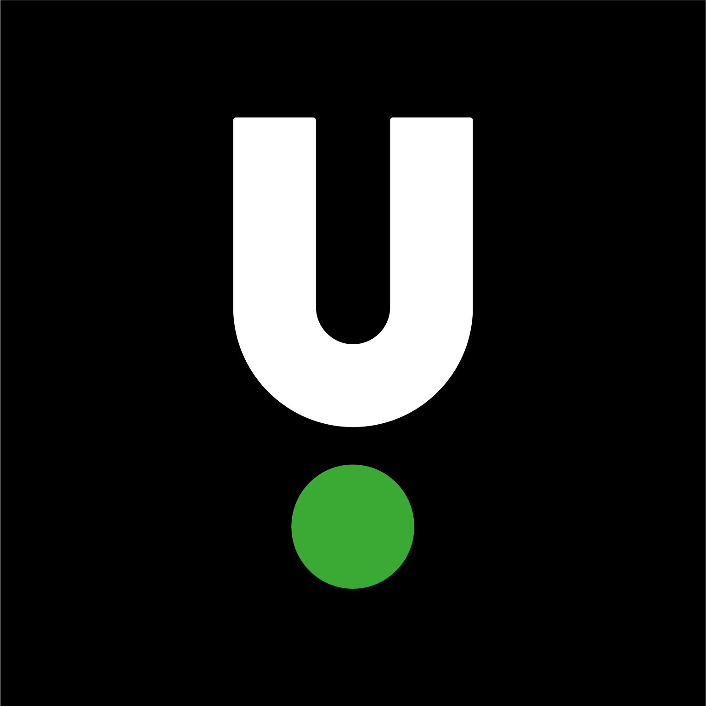
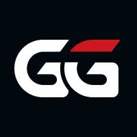
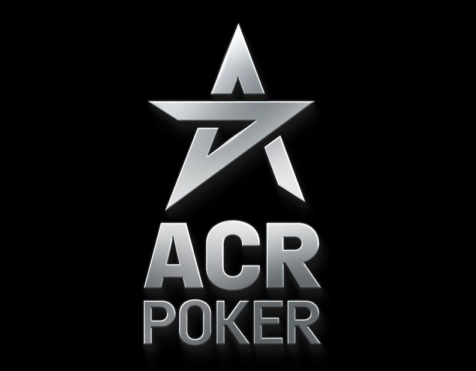
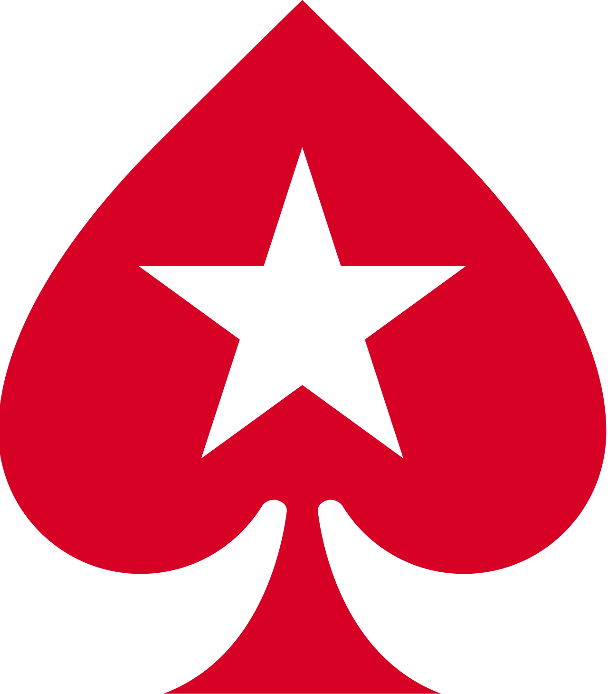

POKER ROOMS
Compare rake, rakeback, and player pools to find your edge.

Unibet Poker
Regional Restriction: Unibet operates on regional domains (e.g., .dk, .se, .no) and is exclusively available in select Nordic and European countries. Please verify local availability before attempting to register.
The ultimate platform for casual players and microstakes grinders. Unibet enforces a strict ban on HUDs, which creates a highly anonymous and soft playing environment free from predatory regulars.
- Rake Structure: Incredibly low microstakes rake (2% at NL4, 3.5% at NL10). Strict "No Flop, No Drop" policy.
- Rakeback: Challenge-based loyalty system tailored towards recreational gameplay.
- Software & Tools: HUDs are strictly forbidden. You can change your alias and avatar up to 3 times a day.
- Player Pool: Extremely soft field with many sports bettors crossing over to the poker tables.

GGPoker
Currently the biggest poker site in the world. Famous for massive tournament series (WSOP Online), innovative software features, and high-action cash games.
- Rake Structure: High rake (4.5% - 5%) with significant caps. Note: Rake is charged preflop on pots ≥ 2.5bb (No "No Flop, No Drop" rule).
- Rakeback: "Fish Buffet" rewards program offering dynamic rakeback up to 60% for extreme volume grinders.
- Software & Tools: Third-party HUDs (like PT4) are banned, but features a built-in "SmartHUD" and integrated staking platform.
- Player Pool: Massive liquidity at all stakes and time zones. Very aggressive cash games.

ACR Poker
The flagship skin of the Winning Poker Network (WPN). ACR accepts players worldwide, including the US, and is famous for offering massive multi-million dollar flagship tournaments like 'The Venom'.
- Rake Structure: Standard 5% rake with industry-standard caps. High-stakes cash games feature lower rake percentage caps.
- Rakeback: Choose between a flat 27% Rakeback scheme or the tiered 'Elite Benefits' program offering up to 60%+ for heavy grinders.
- Software & Tools: Fully supports all major third-party tracking tools including PokerTracker 4, Hold'em Manager 3, and Hand2Note.
- Player Pool: Highly competitive reg-heavy cash games, but massive recreational fields during major tournament series.
CoinPoker
The world's leading crypto-based online poker room. Operating on blockchain technology, CoinPoker features instant deposits and withdrawals via USDT, BTC, or ETH with complete privacy.
- Rake Structure: Low 5% community rake. Rake caps are significantly lower than traditional fiat sites.
- Rakeback: Flat 33% weekly rakeback paid directly to your wallet if you hold and pay rake using their native CHP token.
- Software & Tools: Uses a fully decentralized, transparent Random Number Generator (RNG) verified on the blockchain.
- Player Pool: Soft games fueled by crypto whales, high-stakes nosebleed action, and sports betting enthusiasts.

PokerStars
The most legendary name in online poker. Provides the best, most stable software client in the industry and a massive offering of mixed games and classic MTTs.
- Rake Structure: Standard 5.0% rake with high caps ($1.00+). Does enforce the "No Flop, No Drop" rule.
- Rakeback: Chest-based rewards program with periodic rakeback challenges (varies heavily by region).
- Software & Tools: The gold standard engine. Full support for third-party HUDs like PT4, HM3, and Hand2Note.
- Player Pool: Generally considered one of the tougher, more regular-heavy environments, but huge MTT fields are still soft.